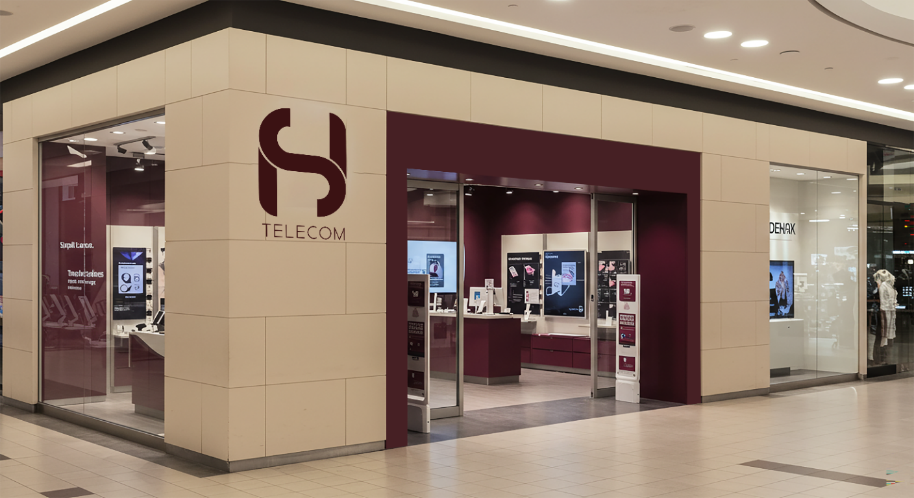
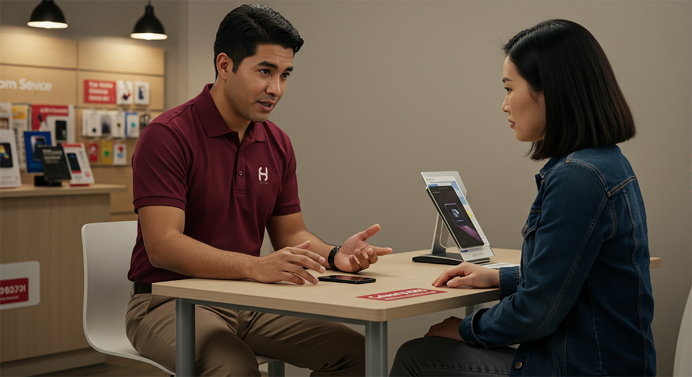
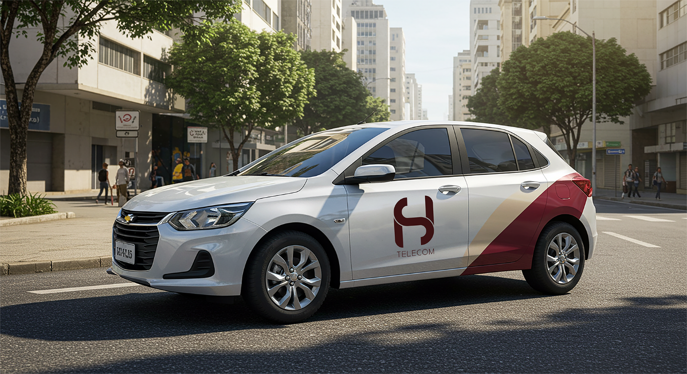
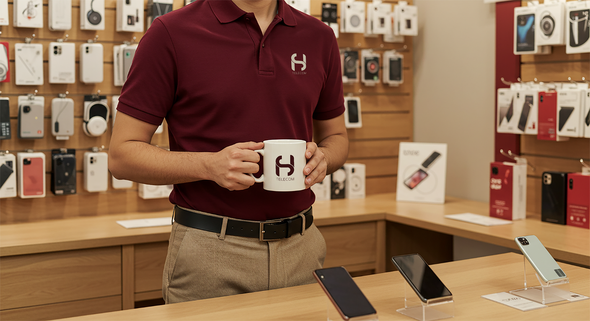
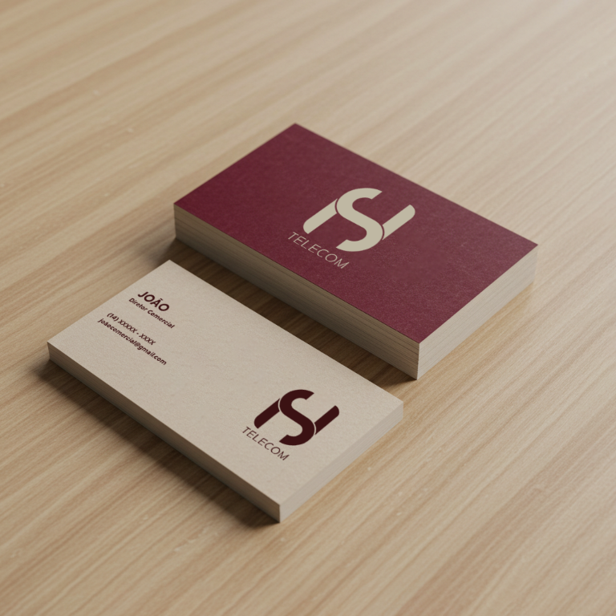
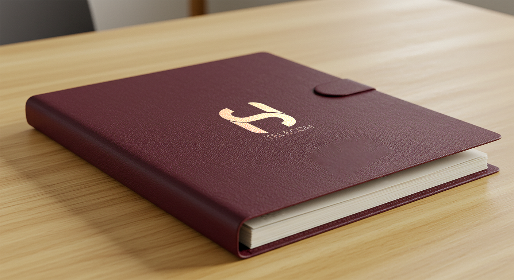
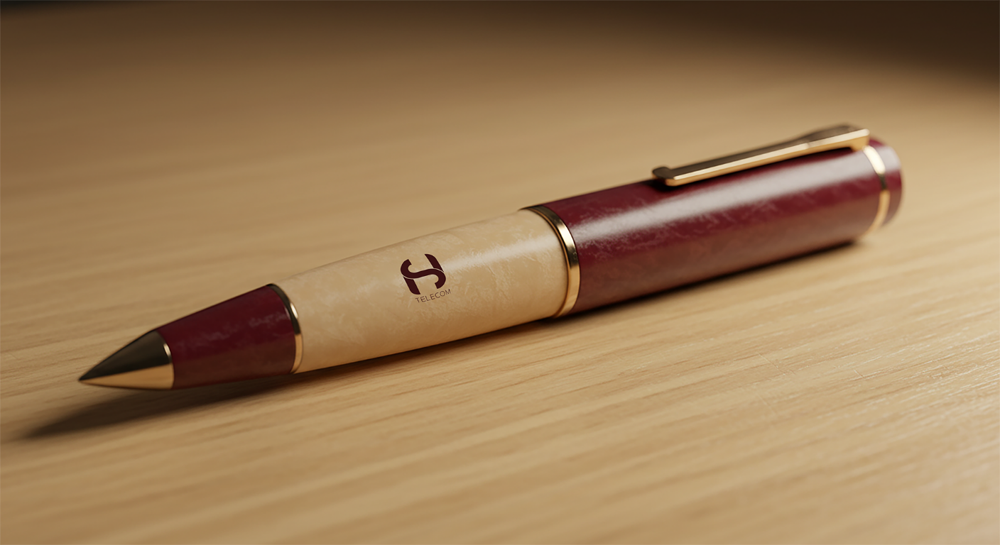
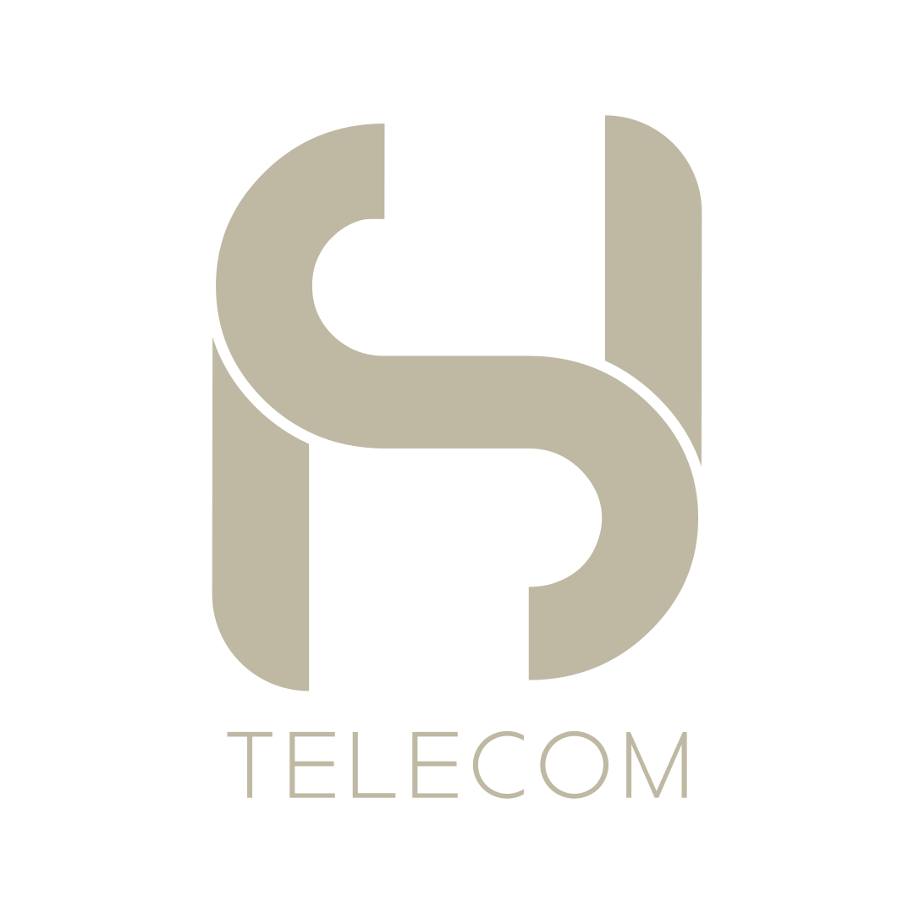

HS Telecom
Uma nova expressão para conectar pessoas.
Atualizar a identidade visual da HS Telecom para aproximar a marca das expectativas atuais do público. A nova linguagem precisava transmitir confiança e inovação, preservar uma comunicação acessível e funcionar com consistência na loja, no atendimento e nos materiais da empresa.
O redesign substitui a tradicional combinação de vermelho e branco por uma paleta de vinho, off-white e bege, acompanhada por um símbolo proprietário e uma assinatura tipográfica clara. A direção visual combina elegância e contraste para manter a marca reconhecível em diferentes escalas e pontos de contato.






#3B1213#BFB8A3#1D1D1B#FFFFFF
As variações de cor permitem aplicar a assinatura em fundos claros e escuros, preservando o contraste e a leitura da marca.
“Uma identidade renovada para aproximar tecnologia, confiança e uma experiência acolhedora.”— P.TR para HS Telecom